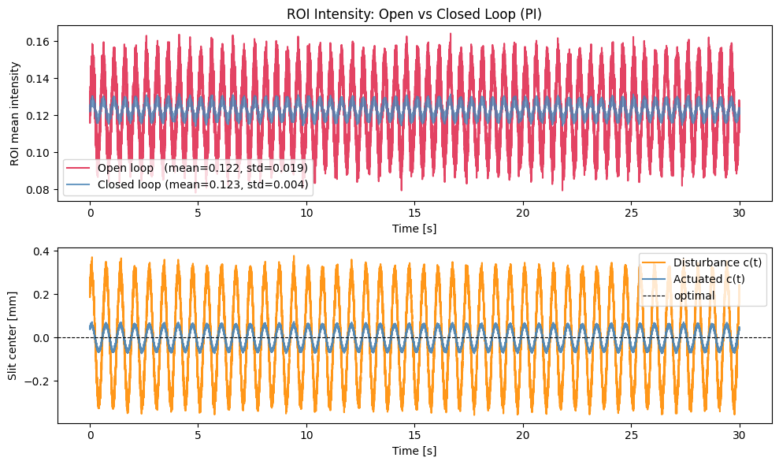
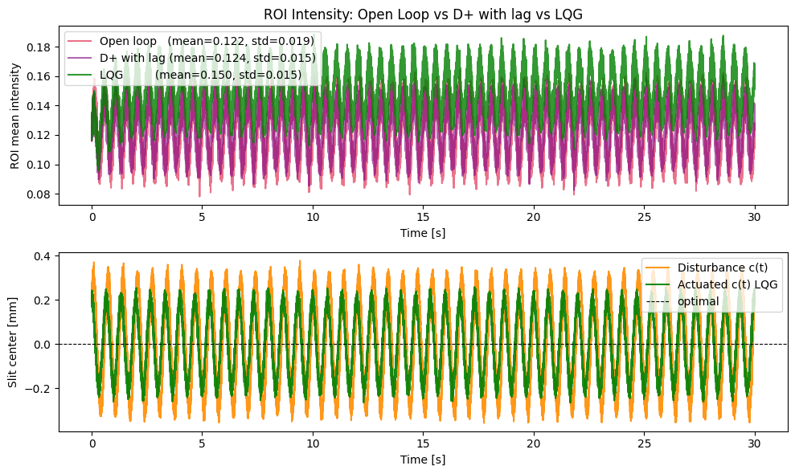
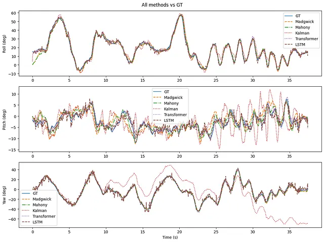
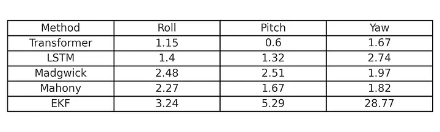
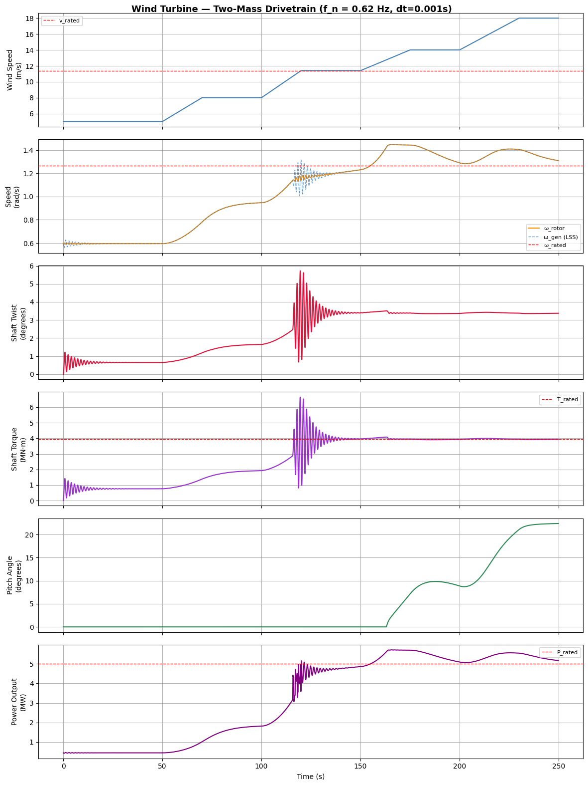

01 / CONTROL
Control & optimisation
Optimal control, dynamic modelling, stability and feedback design.
I’m Saurav, an engineer interested in the space where mathematical models meet physical systems. My work spans control, state estimation and signal processing, with research experience in sensing and medical imaging and industry experience in automation.
A small illustrative scalar-filter demo — not experimental data.
I enjoy problems where the system is only partially observed, measurements are noisy, and the model must guide the algorithm.
I am currently pursuing an MSc in Systems & Control at Delft University of Technology. My academic interests centre on estimation, statistical signal processing, optimisation and the modelling of dynamic systems.
Across projects and research, I have worked with Kalman filtering, LQR/LQG, sensor fusion, physics-guided machine learning and image segmentation. Earlier industrial roles at Siemens and ABB gave me experience translating control logic into systems that can be tested and deployed.
I am especially drawn to research that connects mathematical reasoning with measurable physical outcomes — from extracting state information from sensors to computational methods for optical and imaging systems.
Optimal control, dynamic modelling, stability and feedback design.
Statistical estimation, filtering, sensor fusion and noisy measurements.
Numerical algorithms, scientific computing and model-based learning.
Sensing, imaging, optical systems and industrial applications.
A developing research direction at the intersection of estimation, sensing and control.
Recovering useful state and information from incomplete, uncertain or noisy observations.
Combining physical models and algorithms to improve image formation, measurement and reconstruction.
Fusing heterogeneous measurements and reasoning about uncertainty in dynamic environments.
Designing feedback and estimation strategies for complex physical systems.
An overview of the academic, research and industry experiences that have shaped my path into Systems & Control.
Built foundations in electronics, control systems and signal processing, alongside a VLSI minor.
Prototyped control logic for a smart locking system using the TI MSPM0G3507 microcontroller and UART/I²C communication.
Worked on medical image analysis and oropharyngeal tumour segmentation, benchmarking seven Mask R-CNN encoder–decoder variants and conducting an ablation study.
Developed and validated control logic for a cold rolling mill DCS and modernised operator HMI displays.
Developed physics-guided machine-learning models for electrochemical sensor response prediction; contributed to a first-co-authored paper accepted in Measurement.
Engineered an S7-1200 digital twin, HIL validation workflows and browser-based simulation tools for industrial control logic.
Graduate studies in control theory, optimisation, statistical signal processing and modelling of dynamical systems, with growing interests in estimation and computational imaging.
A selection of work spanning estimation, control, sensor fusion and optimisation. Each project links a model or algorithm to a concrete system-level question.
Built a closed-loop optical simulation and compared PI, pseudoinverse-based control and LQG under disturbance and actuator lag. Identified disturbance frequencies from the open-loop Welch PSD and designed a Kalman filter with a harmonic disturbance model.
Developed a pipeline to align IMU and motion-capture data, implemented a quaternion-state EKF, and compared classical filters with LSTM and Transformer models using motion-capture ground truth.
Implemented DARE-based LQR, a discrete-time Kalman filter and a Luenberger observer in a modular C++17/Eigen library. Combined LQR and filtering into an LQG controller and tested stability, convergence and output-feedback regulation.
Compared finite-horizon time-varying LQR with Kalman-filter-based LQG on a nonlinear bicycle model, using paired noise and an open-loop optimal-control baseline.
Modelled a nonlinear two-mass drivetrain with below-rated MPPT, gain-scheduled pitch regulation and a Luenberger observer for aerodynamic torque estimation.
Explored LQR and algebraic Riccati equations as a proxy for ranking equilibria in multimodal landscapes, then validated the approach on benchmark functions and planar robot inverse kinematics.
Developed an S7-1200 digital twin for discrete-state control logic across nine automation scenarios, with hardware-in-the-loop simulation and a browser-based interface incorporating a PCS 7 DCS simulation layer.
A Fourier-optics simulation used to study how slit-centre and slit-width disturbances affect focal-plane intensity, and how feedback and disturbance-aware control can recover image quality.


A 633 nm HeNe plane wave passes through a mechanically disturbed slit. A thin lens (f = 0.1 m) forms the Fourier-transform intensity pattern at the focal plane. Slit width and centre are perturbed at 2.0 Hz and 1.5 Hz, respectively, with measurement noise.
Three approaches were compared: (1) PI feedback on slit position; (2) a static interaction matrix identified through finite-difference actuator pokes, with its pseudoinverse mapping ROI error to actuator correction; and (3) an LQG approach using a harmonic disturbance model identified from the open-loop Welch PSD.
A first-order actuator lag (τ = 0.1 s; cutoff approximately 1.6 Hz) was included to test sensitivity when disturbance frequencies approach actuator bandwidth.
| Controller | ROI mean | Std. dev. |
|---|---|---|
| Open loop | 0.1224 | 0.0186 |
| PI | 0.1230 | 0.0037 |
| D⁺, no lag | 0.1237 | 0.0004 |
| D⁺, with lag | 0.1235 | 0.0147 |
| LQG | 0.1501 | 0.0150 |
A common-dataset comparison of classical attitude filters and learned sequence models, built around raw inertial measurements and motion-capture ground truth.


Used the TUM Visual-Inertial Dataset calibration sequence calib-cam7. The pipeline extracts 200 Hz accelerometer and gyroscope data from ROS bags and aligns estimates with VRPN motion-capture quaternion ground truth.
Classical methods include Madgwick and Mahony complementary-style filters and a custom quaternion EKF with a numerically linearized measurement Jacobian. Learned methods use 20-sample windows of 9-axis IMU data in a two-layer Transformer encoder and a single-layer LSTM.
Implementation details include explicit gyro-unit detection, robust ROS CSV column handling, quaternion normalization and careful conversion between (w, x, y, z) and (x, y, z, w) conventions.
| Method | Roll | Pitch | Yaw |
|---|---|---|---|
| Transformer | 1.15 | 0.60 | 1.67 |
| LSTM | 1.40 | 1.32 | 2.74 |
| Madgwick | 2.48 | 2.51 | 1.97 |
| Mahony | 2.27 | 1.67 | 1.82 |
| EKF | 3.24 | 5.29 | 28.77 |
A two-mass drivetrain model with region-dependent torque and pitch control, used to examine rotor-speed regulation and drivetrain transients across changing wind conditions.

The below-rated region uses an optimal torque law for maximum power-point tracking. As rotor speed approaches rated speed, pitch regulation limits aerodynamic power and rotor speed. The actuator includes a pitch-rate constraint.
Applying computational methods to data generated by sensors and imaging systems.
Developed physics-guided machine-learning models for electrochemical sensor response prediction, combining Random Forest, XGBoost and physics-guided approaches. Contributed to a first-co-authored paper accepted in Measurement.
Benchmarked seven Mask R-CNN encoder–decoder variants for oropharyngeal tumour segmentation across T1–T4 stages. Conducted an ablation study to investigate which architectural changes contributed to segmentation performance.
Eun-Bi Kim, S. Avachat, S. Ameen, and A.S. Akhtar. Measurement, Elsevier, 2026. First co-author contribution.
Read the accepted paper on ScienceDirect ↗Manuscript in preparation, 2026.
Industry experience shaped how I think about implementation, validation, operator workflows and the constraints of deployed systems.
Engineered an S7-1200 digital twin for nine industrial automation scenarios, enabling HIL validation of control-logic state transitions. Built a browser-based simulation interface integrating a PCS 7 DCS simulation layer and contributed to the SiTrain operator-training platform.
Developed and validated control logic for a cold rolling mill DCS, modernised operator HMI displays and integrated diagnostic visibility with real-time process data flows.
Prototyped control logic for a smart locking system using the TI MSPM0G3507 microcontroller, including state management and UART/I²C communication.
MSc Systems & Control Engineering, Delft Center for Systems and Control. Relevant coursework includes Control Theory, Statistical Signal Processing, Modelling of Dynamical Systems and Optimisation.
BTech Electronics & Communication Engineering. CGPA 9.18/10, ranked 3rd of 120. VLSI minor, CGPA 9.53/10.
LQR, LQG, PID, state observers, gain scheduling, system identification, nonlinear modelling.
Kalman filtering, EKF, DSP, sensor fusion, AHRS, quaternion algebra.
Python, NumPy, SciPy, MATLAB/Simulink, numerical simulation, optimisation.
C++17, Eigen, CMake, Google Test, Embedded C, TI MSPM0, UART/I²C.
PyTorch, TensorFlow, scikit-learn, Mask R-CNN, U-Net, Swin-UNETR.
Siemens TIA Portal, WinCC, ABB Control Builder, fieldbus, Profinet.
Open to research conversations, technical collaborations and opportunities in control, estimation and signal processing. Based in Delft, the Netherlands.